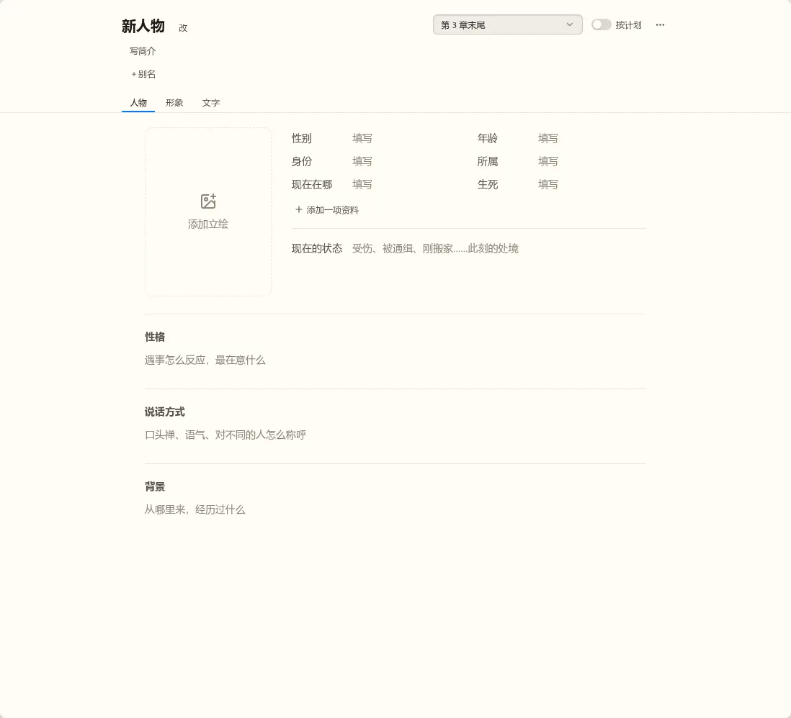
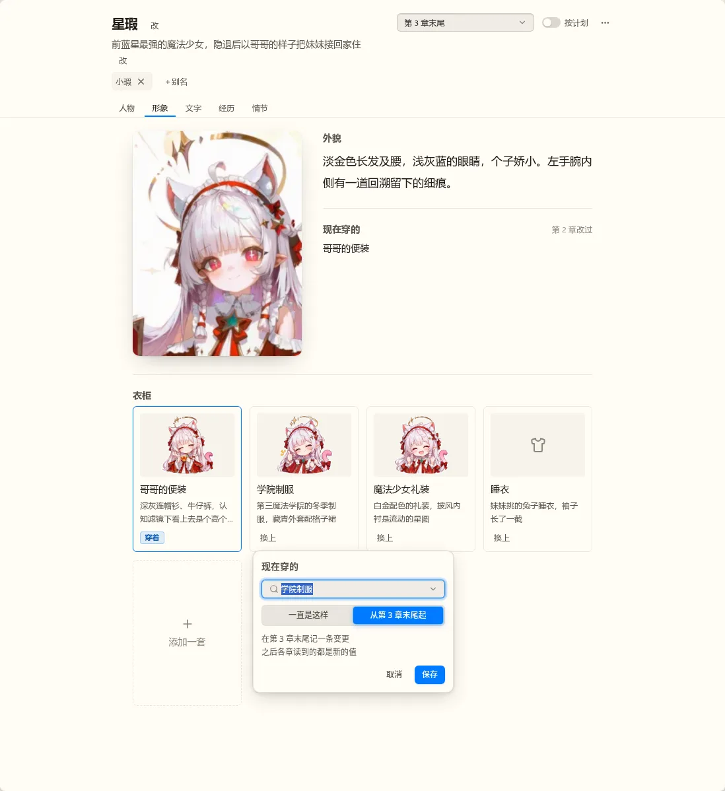
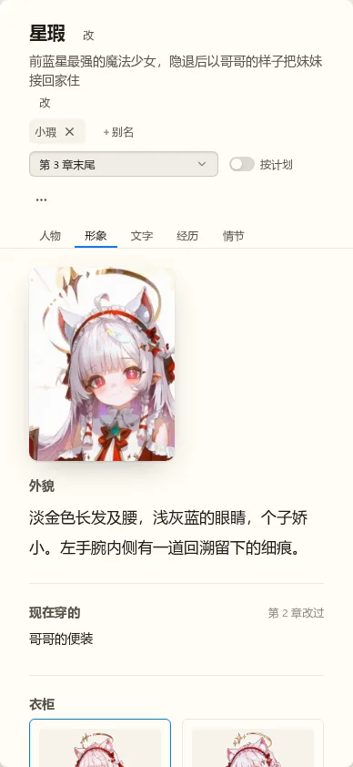
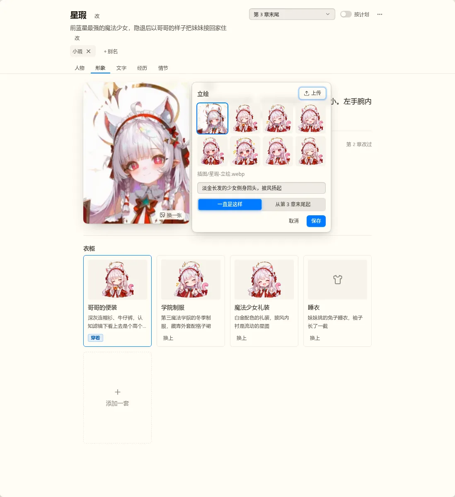
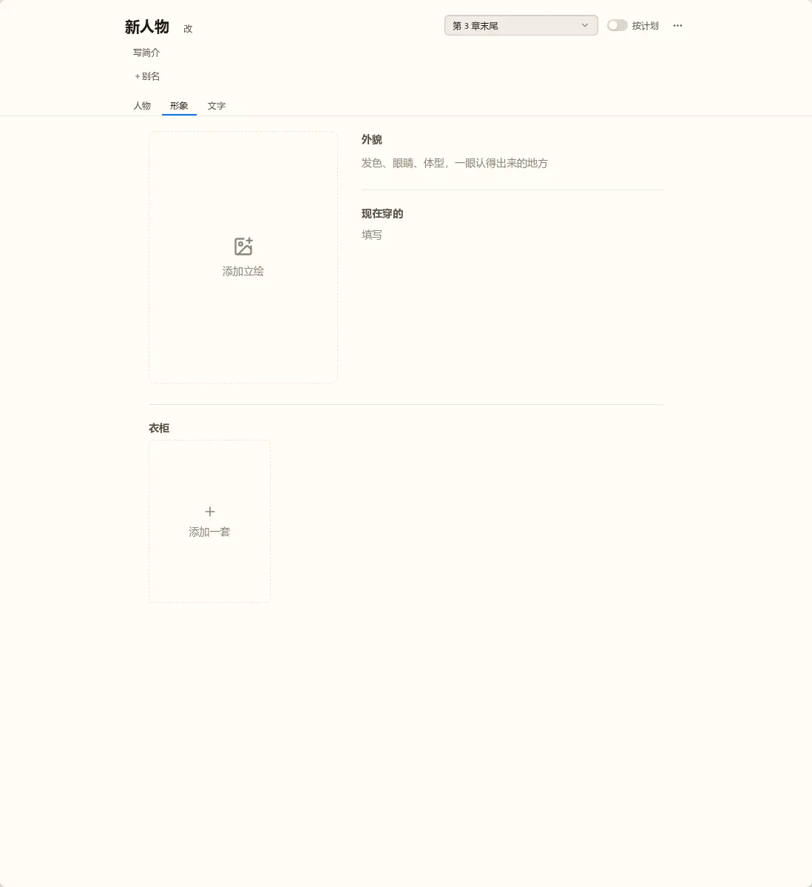
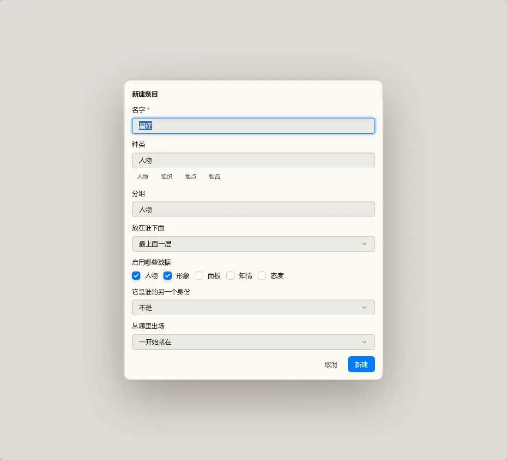

第 2 轮：人物与形象两个分页
人物分页照这个样子做？
推荐同意：立绘读自形象这一组；右边一行一项的短资料，自己加的项排在后面；下面是现在的状态与成段的文字。
填好的人物
条目上没有形象这一组
手机宽
刚新建的人物

改一项：短的在浮层里改，成段的浮在原处改？
推荐同意：点值就改，别的内容都不动；点浮层外面或按 Esc 等于取消；值在剧情里变过时，点“第 N 章改过”看来历。
有建议值的：下拉里选，也能直接写
指向条目的：按名字搜
成段的文字
点“第 2 章改过”看来历
现在的状态：之前记下的各句与记一句
形象分页照这个样子做？
推荐同意：大图、外貌、现在穿的在上，衣柜在下；点某一套的“换上”就是改现在穿的，预选“从这一章起”。
填好的形象
换装

手机宽

选立绘：从作品的图片里选，或者上传

刚加上、还空着

添加一项资料与新建条目照这个样子做？
推荐同意：添加一项里列预设的与去掉过的，也能自己写名字；新建时选了“人物”就勾上人物与形象两组，还能改。
添加一项资料
新建条目

人物的条目打开时先看哪个分页？
推荐 A 人物在前：打开一个人物，先看到他是谁、长什么样；主文字退到后面。
A 人物在前
- 人物
- 形象
- 文字
- 经历
- 情节
B 文字在前（现在的做法）
- 文字
- 人物
- 形象
- 经历
- 情节
已定
- 一个设定组是数据加展示，一个分页对应一个设定组；形象单独成组，人物的展示引用它；展示部分先用 Vue 组件写（2026-11-24）
- 改一项时就地改，不跳到页面顶上的确认条；本期只做人物、形象两个分页（2026-11-24）
- “添加”分两个入口：添加一项资料、添加一组设定（2026-11-24）
- 四样预设都要；预设选项做成可以自己填的建议值；模板不写示例内容（2026-11-24）
- 种类登记默认带哪几组设定：新建人物直接带人物与形象（2026-11-24）